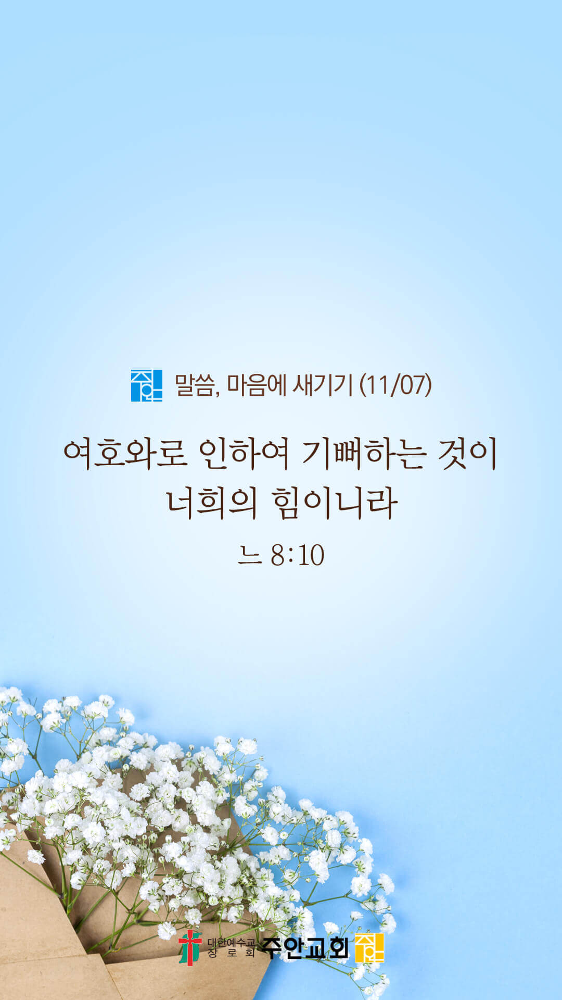

기도실 안내
2021년 11월 07일 (주일)
- 온라인 기도실은 온 회중이 함께 주님 앞으로 나아가는 자리입니다
- 30분 정도 여유를 가지고 하시기 바랍니다
- 말씀과 묵상, 찬양과 기도로 나아갑니다
- 배경 음악이 나올 수 있습니다 볼륨을 조절해주세요
준비가 되셨으면 아래의 버튼을 눌러주세요
할렐루야
내 영혼아 여호와를 찬양하라
시 146:1
- 가사를 묵상하며 읽습니다
내가 누려왔던 모든 것들이
내가 지나왔던 모든 일들이
내가 걸어왔던 모든 순간이
당연한 것 아니라 은혜였소
아침해가 뜨고 저녁에 노을
봄의 꽃향기와 가을에 열매
변하는 계절의 모든 순간이
당연한 것 아니라 은혜였소
모든 것이 은혜 은혜 은혜
할렐루야
내 영혼아 여호와를 찬양하라
시 146:1
- 가사를 묵상하며 읽습니다
한없는 은혜
내 삶에 당연한 것 하나도 없었던 것을
모든 것이 은혜 은혜였소
내가 이 땅에 태어나 사는 것
어린 아이 시절과 지금까지
숨을 쉬며 살며 꿈을 꾸는 삶
당연한 것 아니라 은혜였소
내가 하나님의 자녀로 살며
오늘 찬양하고 예배하는 삶
할렐루야
내 영혼아 여호와를 찬양하라
시 146:1
- 가사를 묵상하며 읽습니다
복음을 전할 수 있는 축복이
당연한 것 아니라 은혜였소
모든 것이 은혜 은혜 은혜
한없는 은혜
내 삶에 당연한 것 하나도 없었던 것을
모든 것이 은혜 은혜였소
할렐루야
내 영혼아 여호와를 찬양하라
시 146:1
은혜 by 손경민
위의 찬양이 끝나면 말씀읽기를 눌러주시면 됩니다
주의 말씀은 내 발에 등이요
내 길에 빛이니이다 (시119:105)
오늘의 말씀입니다
음악 소리가 크면 조절하시기 바랍니다

마음의 묵상
느 8:10
“느헤미야가 또 그들에게 이르기를 너희는 가서 살진 것을 먹고 단 것을 마시되 준비하지 못한 자에게는 나누어 주라 이 날은 우리 주의 성일이니 근심하지 말라 여호와로 인하여 기뻐하는 것이 너희의 힘이니라 하고”
1. 우리의 힘은 무엇이라고 말씀하나요?
2. 어떤 상황 속에서도 주님으로 인해 기쁨을 잃지 않고 사시나요?
3. 여호와로 인한 기쁨을 모르고 있는 VIP들을 위해 간절히 기도합시다
제 안의 기쁨을 누구도 빼앗을 수 없습니다
회개, 삶의 방향을 바꾸는 결정
예레미야의 마음을 주소서!
“내가 다시는 여호와를 선포하지 아니하며 그의 이름으로 말하지 아니하리라 하면 나의 마음이 불붙는 것 같아서 골수에 사무치니 답답하여 견딜 수 없나이다”
- 예레미야 20:9 -
3분 정도 회개하며 주님 앞에 나아갑니다
사슴이 시냇물을 찾기에 갈급함 같이
시 42:1
- 다음의 말씀을 소리 내어 읽습니다
[예레미야 20장 7-8절]
7 여호와여 주께서 나를 권유하시므로 내가 그 권유를 받았사오며 주께서 나보다 강하사 이기셨으므로 내가 조롱거리가 되니 사람마다 종일토록 나를 조롱하나이다
8 내가 말할 때마다 외치며 파멸과 멸망을 선포하므로 여호와의 말씀으로 말미암아 내가 종일토록 치욕과 모욕 거리가 됨이니이다
나라와민족을 위한 복음
1. 나라와 민족을 복음으로 변화시켜주소서
능력의 하나님,
죄 많은 우리 대한민국에 긍휼을 베풀어주옵소서. 오직 주님만이 이 땅의 소망되심을 믿습니다. 사람들의 심령을 변화시켜주소서.
물질숭배, 우상숭배, 이단, 각종 죄악으로부터 돌아서게 하시고 하나님의 기쁨이 되는 백성이 되게 하옵소서.
그리하여 더 많이 선교하고 전도하는 우리나라가 되게 하옵소서.
간절한 마음으로 3분 정도 기도합시다
주안교회의 사명
2. 주안교회가 영혼구원의 사명을 끝까지 감당하게 하소서
주안교회를 일찍이 인천에 세우시고 지금까지 복음 전파의 사명을 감당하게 하신 주님,,
저희가 그 부르심과 세우심의 뜻을 잊지 않게 하옵소서. 주님과의 첫 사랑을 회복하게 하시고 저희 안에 복음 전파의 열정을 지속적으로
불어넣어 주옵소서. 그리하여 저희의 약해진 믿음을 강건하게 회복시켜주시고 한 영혼을 천하보다 귀하게 여기시는 아버지의 마음을 품게 하여주옵소서.
간절한 마음으로 3분 정도 기도합시다
주님의 주관하심
3. 올라인 예수사랑큰잔치를 친히 주관하여 주소서
저희의 영혼을 고치시고 치유하시는 하나님,
전도대상자들(VIP)을 주님 손에 올려드립니다. 그들을 치유하시고 하나님의 형상대로 회복시켜주옵소서. 창조주 되신 주님께서 그들의 영혼을
어루만져주시어 복음으로 거듭나게 하옵소서. 저희의 말과 힘으로는 그들을 변화시킬 수 없사오니 주님께서 친히 그들에게 임하셔서 복음에 대해
들을 귀와 부드러운 마음을 허락하여 주옵소서.
간절한 마음으로 3분 정도 기도합시다
주님의 인도하심
4. 올라인 예수사랑큰잔치의 과정과 결과를 지켜주소서
사랑의 주님,
작정자 선물이 전달되고 있는데 모든 대상자들에게 잘 전해질 수 있도록 인도해주시고, VIP들이 그 선물을 통해 주님의 사랑을 느끼고 결신에 이를 수 있도록
인도하여 주옵소서. 그들이 초청의 날에 용기를 내어 교회로 올 수 있게 하시고, 못 오는 분들은 온라인으로 예배하게 하시며,
모두 분명한 의사로 결신하여 주님을 영접하게 하옵소서.
간절한 마음으로 3분 정도 기도합시다
말씀에 순종
5. 우리가 말씀에 순종하게 하소서
하나님 아버지,
저희가 복음의 능력을 확신하게 하옵소서. 주안의 모든 성도들이 복음 전파의 소명 앞에 머뭇거리지 않게 하옵소서. “복음은 모든 믿는 자에게
구원을 주시는 하나님의 능력”이 됨을 철저하게 믿게 하옵소서. 그리하여 사도바울처럼 복음을 부끄러워하지 아니하고, 사람을 차별하지도 아니하며,
가능한 모든 가족들과 지인들에게 복음을 담대히 전파하도록 저희와 함께 하여 주옵소서.
간절한 마음으로 3분 정도 기도합시다
감사의 기도
- 오늘 기도를 인도하신 주님께 감사를 올려드립니다
- 아래의 구절을 읽고 주님께 감사의 마음을 올려드립시다
“오직 성령이 너희에게 임하시면
너희가 권능을 받고 예루살렘과 온 유대와
사마리아와 땅 끝까지 이르러
내 증인이 되리라 하시니라”
- 사도행전 1장 8절 -
고요한 가운데 잠시 침묵하시기 바랍니다
파송, 세상을 향하여
- 오늘의 온라인 기도를 마쳤습니다
기도를 들으신 주님께서 평안히 가라 하십니다
주님께서 우리와 함께 하시니 두려울 것이 없습니다
새벽을 깨우며
- 새벽기도회 안내입니다